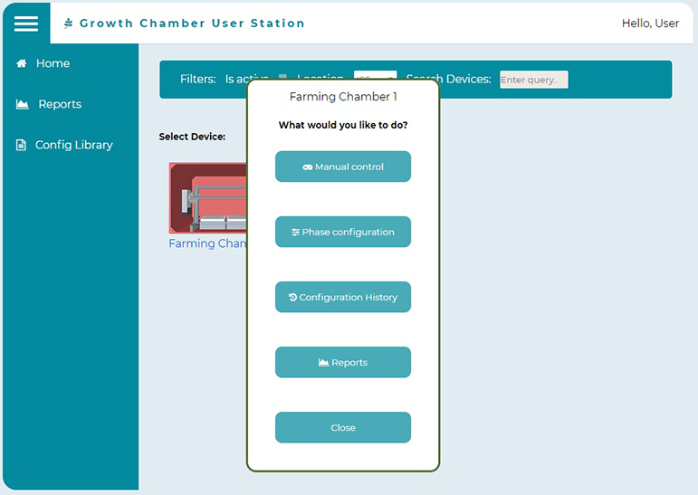
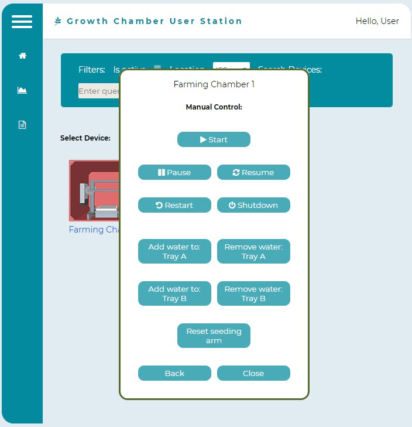

3. Manual Control and Editing
Astronauts can manually control the selected Farming Chamber and edit the loaded configuration files under "phase configuration". Astronauts may need to make changes to loaded configuration files because microgravity can have unforeseen effects on crops growing in the chamber.
Selected Growth Chamber prompt
Selected Growth Chamber prompt at Manual Control
An alert shows on each action for whether or not it succeeded
Astronaut editing a configuration file
Astronaut's can change values in white boxes using the green sliders. Value ranges for sliders are limited by component type